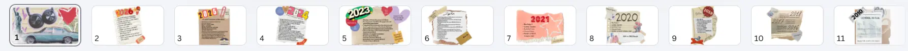
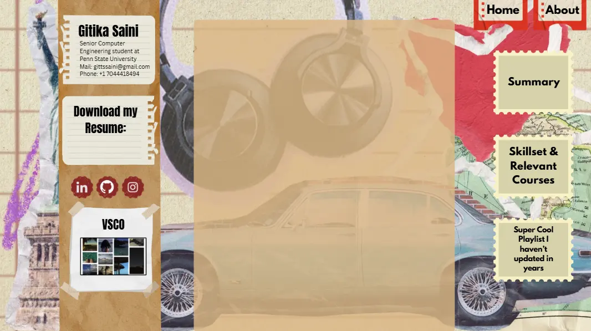

Summer '25, my portfolio started out as a bunch of assets on Canva, then Figma, and finally a GitHub Page. The default, sensible choice for a portfolio would've been to make a sharp, clean site, add a navbar, and call it a day.
Why didn't I do that? Because I was bored. And I really wanted to document my love and journey for & with tech so far.
Why not a nice clean timeline? Because I was bored. And I really wanted my portfolio to reflect what I think of myself instead of what I want recruiters to think of me. Because well, they'll be working with ME, not who I'd love them to think I am.

Before any code was written, there were Canva slides. A lot of them. Each year of my life as a scrapbook card, 2016 through 2025, with photos, fonts, little doodles, and increasingly chaotic energy as the years got more recent.
It was part portfolio, part memory box, part cry for help from a person who had too many tabs open.
Because the whole site is essentially a gallery of handmade assets rather than styled HTML, Figma was less about wireframing components and more about making sure the year cards felt right at different screen sizes before I committed them to Canva and exported everything. Each tool had a specific job, Canva for making the assets, Figma for arranging them into a layout, vscode for putting it all live.

For a full academic year, the spot where the Devlogs button now lives was a VSCO button. It linked to my VSCO. It had no business being there. I knew that. I kept it anyway as a placeholder while I figured out what I actually wanted to put there, which turned out to be this entire devlogs site.
Patience or procrastination? Unclear. Both, probably.
I've had prior experience with web dev but most of it was sleek, sharp pages, nothing with this many assets. The portfolio is almost entirely image-based; every year card is a custom asset, not an HTML element. No standard components, no reusable CSS patterns. The hamburger menu, the social icons, the Devlogs button, all custom assets built in Canva and dropped in.
That approach meant every design decision had to be made before writing a single line of code. You can't just "fix it in CSS" when the thing you're fixing is a .webp.
The portfolio ended up being a weird hybrid of scrapbook, resume, and timekeeping. It was never meant to impress. It was meant to be accurate. And I like to think that it is :))